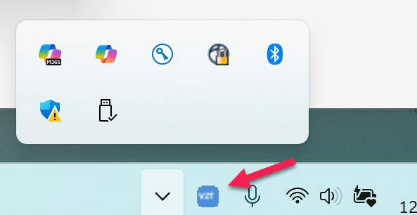

By default, Windows may hide the Voice2Text icon in the overflow area of your system tray. Moving it to the always-visible area lets you monitor V2T's status at a glance.
The V2T icon changes color to show you what's happening:
| Icon Color | Status |
|---|---|
| Blue | Idle – ready to record |
| Green | Recording – capturing your voice |
| Amber | Transcribing – processing audio to text |
If the icon stays hidden, you can't see these status changes. Moving it to the visible area keeps you informed.
Here's what it looks like when properly placed in the visible system tray:
